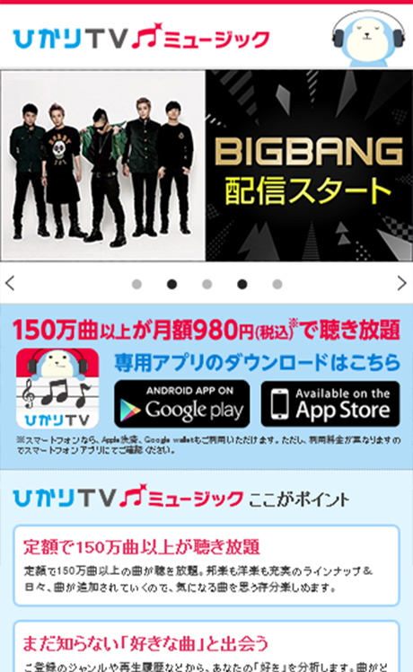
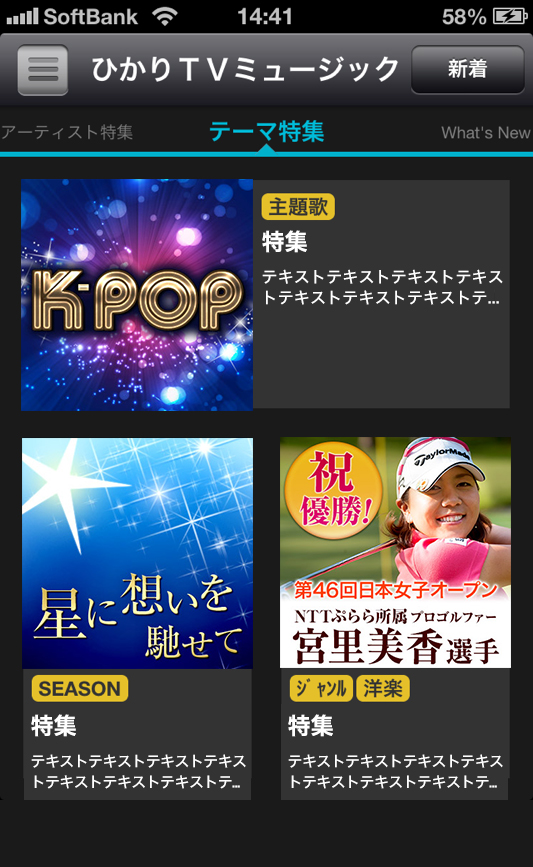
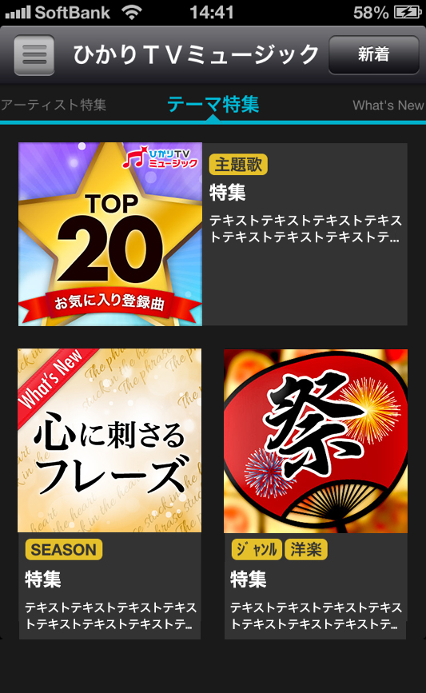

ひかりTVミュージック
- Category
- 新規サービス紹介サイト
- Year
- 2013年
- Project
- WEBサイト新規・アプリ内パーツ制作
- Part
- UIデザイン / フロントエンド実装 / アプリ内UIパーツ制作
- Tool
- Photoshop / Illustrator / Dreamweaver / HTML / CSS / Javascript
新規事業「ひかりTVミュージック」のサービス紹介サイトを新規制作。 世界観を軸に、サービス価値と機能が直感的に伝わる構成設計から デザイン・実装までを担当。




背景・課題
新規音楽配信サービスの立ち上げに伴い、 サービス価値を明確に伝える紹介サイトが必要。
世界観や公式キャラクターを活かしながら、 機能や利用メリットを直感的に理解できる構成設計が求められていた。
制作フロー
01
目的整理
サービス価値を定義。
ターゲットと情報優先順位を整理。
02
情報設計・構成設計
ファーストビューで価値を提示。
特徴 → 機能 → 利用導線へと接続する構成を設計。
03
デザイン制作
世界観を統一。
キャラクターをアクセントとして活用し、
サービスイメージを視覚的に強化。
04
実装・更新設計
HTML/CSSで構造化。
セクション単位で拡張可能な構造を構築。
意識したこと
ファーストビュー設計
「どんなサービスか」「誰に向いているか」が 一目で伝わるコピーとビジュアルを設計。
情報の優先順位整理
特徴 → 利用シーン → 機能 → 利用方法の順で構成。 理解が段階的に深まる流れを構築。
キャラクター活用設計
公式キャラクターをナビゲーターとして活用し、 情報理解を補助。
成果
- 1ページ構成でサービス全体像を明確化
- 世界観を統一し、ブランド印象を確立
- 機能理解から利用導線までを一貫した構成で整理
ふりかえり・改善点
世界観のあるサービスでは、 デザインの一貫性がブランド印象に直結することを実感いたしました。
今後はビジュアルだけでなく、 数値検証やユーザー導線の分析まで踏まえ、 より成果に直結する設計を行っていきたいと考えております。